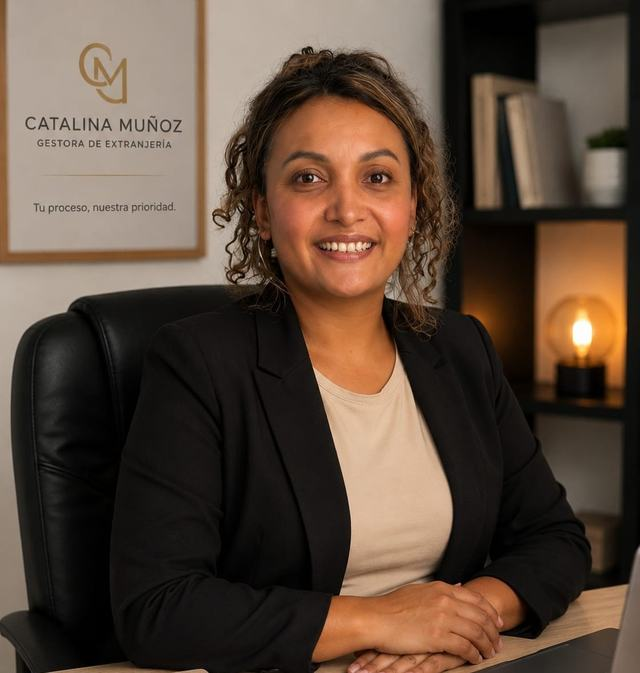

1
Arraigo y regularización
Orientación y preparación documental para las vías de arraigo y regularización que puedan corresponder a tu situación.
Tu trámite de extranjería sin complicaciones.
Acompañamiento personalizado para arraigo, nacionalidad española, visados y residencias, reagrupación familiar, homologación de títulos, canje de permiso de conducir y otros trámites.
“Cada trámite empieza por entender bien tu situación y saber qué opción encaja contigo.”
Catalina Muñoz · Gestora de extranjería
Reviso tu situación, la documentación disponible y el objetivo del trámite para ayudarte a identificar los pasos que corresponden en tu caso.
Orientación y preparación documental para las vías de arraigo y regularización que puedan corresponder a tu situación.
Revisión de requisitos, documentación y acompañamiento durante el proceso de solicitud de nacionalidad.
Apoyo en trámites de residencia, visados y autorizaciones para vivir, estudiar o trabajar en España.
Preparación y revisión de la documentación necesaria para estudiar en España y gestionar tu estancia.
Acompañamiento para reunir a tu familia en España y preparar correctamente el expediente.
Orientación sobre requisitos y documentación para perfiles profesionales que quieren residir y trabajar en España.
Revisión del proceso para el reconocimiento en España de estudios o títulos obtenidos en el extranjero.
Revisión de requisitos y documentación para el canje de un permiso extranjero cuando exista la vía aplicable.
Orientación para preparar documentos extranjeros que deban surtir efectos en España.
Revisión del trámite y de la documentación necesaria cuando los antecedentes puedan afectar otros procedimientos.
Me cuentas tu situación y revisamos qué trámite puede encajar mejor contigo.
Analizamos lo que ya tienes y qué documentos pueden faltar.
Organizamos la documentación y los pasos necesarios para presentar el expediente correctamente.
Te acompaño durante el proceso y te explico cada avance de forma clara.

Ayudo a personas extranjeras a gestionar sus trámites en España con una comunicación clara, cercana y ordenada, evitando que el proceso se convierta en una cadena de dudas y documentos sin contexto.
Trabajo de forma online con personas que están en España y también con quienes están preparando su llegada desde el extranjero.
Estas respuestas son generales. Los requisitos pueden variar según tu nacionalidad, situación administrativa y el procedimiento concreto.
Muchas consultas, revisiones documentales y tareas de preparación pueden gestionarse a distancia. La necesidad de acudir presencialmente depende del trámite y del organismo correspondiente.
Depende del procedimiento. Lo primero es revisar tu situación y la documentación que ya tienes para identificar qué puede faltar antes de presentar nada.
En muchos casos existe un procedimiento de homologación, equivalencia o reconocimiento. La vía concreta depende del título, del nivel académico y del objetivo profesional o académico.
Depende del país que expidió el permiso, de tu situación en España y de los requisitos vigentes de la DGT. Conviene revisar el caso antes de iniciar la solicitud.
Cuéntame tu caso por WhatsApp y revisamos qué trámite puede corresponder y qué documentación necesitas preparar.
Escríbeme por WhatsApp